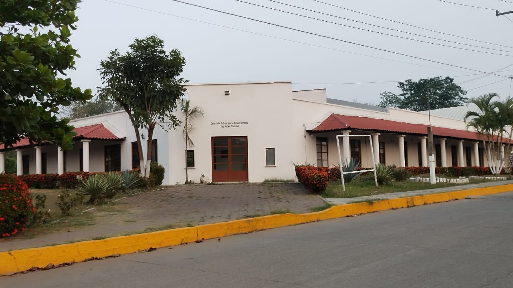
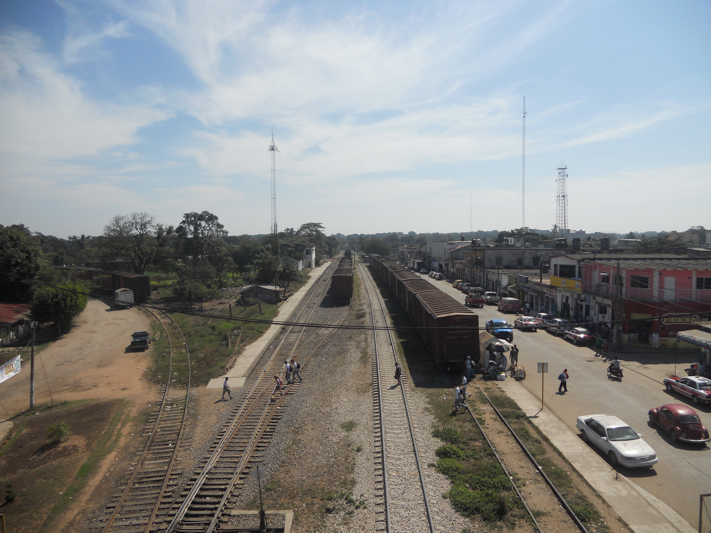
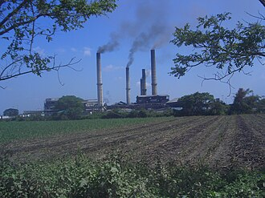

En esta seccion podran ver un poco sobre la historia de Tres Valles, Ver.
El 21 de noviembre de 1907 se considera la fecha de fundación de la ciudad de Tres Valles.
Se desconoce el origen de tal fecha. El registro más antiguo localizado con tal fecha data de 1982, en la placa conmemorativa del monumento a Miguel Hidalgo ubicado en el parque central de la ciudad. Parece ser que durante el proceso de construcción del monumento se estableció tal fecha. Además se ha localizado un documento fechado el 24 de noviembre de 1939 mencionando que la fundación se había realizado "hace cosa de 32 años", es decir, alrededor de 1907.
El poblado existía, según los cronistas, cuando menos desde 1900, cuando se asentó un campamento de los constructores del ferrocarril Veracruz al Pacífico. El único hecho de relevancia que se ha localizado alrededor del año 1907 es la llegada de la familia Martínez, dueños de las tierras donde se asentaba el poblado. Posiblemente, este u otros hechos hayan perdurado en la memoria colectiva y con el paso de los años se haya considerado este año como el punto a partir del cual se concretó la existencia de la comunidad.
El municipio de Tres Valles es un municipio del estado mexicano de Veracruz, declarado municipio libre por decreto el 25 de noviembre de 1988. Se encuentra ubicado en la baja cuenca del Papaloapan, colinda con el estado de Oaxaca y los municipios de Tierra Blanca y Cosamaloapan.
Cuenta con una economía solvente, basada en la agricultura y la agroindustria, entre otras. La principal fuente de ingresos es la agricultura, particularmente el cultivo de caña de azúcar; aunque también se siembra arroz, maíz, frijol, piña y sorgo; existen grandes siembras de mango, lo cual propicia la comercialización de esta fruta en temporada.
Inicialmente una zona de dominio Olmeca, después Totonaca, hasta la conquista de los Aztecas, ya en la colonia quedó ubicado entre las jurisdicciones de Puctlancingo y Cosamaloapan hasta la desaparición del primero. El origen de la población se da con el tendido de la red de ferrocarriles, posiblemente hacia 1900 en lo que fuera el campamento número siete de los trabajadores del ferrocarril Veracruz al Pacífico.
Con una extensión de 378.1 km², una altitud máxima de 50 m s. n. m. y una mínima de 10, se encuentra en la región del Papaloapan, entre 96° 01' y 96° 18' al oeste del meridiano de Greenwich y entre los 18° 10' y 18 25' de latitud norte, delimitado en su mayoría por cursos de agua, como el río Tonto, Amapa, Hondo y los arroyos Mongogo Coapilla, Coyote, Zapote y Jobo, siendo el principal afluente el Tonto, que además sirve de abasto para las principales industrias ubicadas en territorio municipal.

La Casa de la Cultura "Gabriel Martínez Hernández" en Tres Valles, Veracruz, fue fundada el 17 de marzo de 1974. Su objetivo principal es preservar, rescatar y transmitir las tradiciones artísticas y culturales de la región del sotavento. Esta casa de la cultura, ubicada en la cuenca baja del río Papaloapan, ofrece talleres de danza folclórica, artes plásticas y música para fomentar la cultura local.
Fundación y Propósito:
La Casa de la Cultura en Tres Valles fue establecida como la primera de su tipo en el estado de Veracruz. Su creación respondió a la necesidad de proteger y difundir el patrimonio cultural de la zona, especialmente las expresiones artísticas y culturales propias de la región del sotavento, en el contexto de la cuenca baja del río Papaloapan.
Actividades y Talleres:
La Casa de la Cultura "Gabriel Martínez Hernández" se destaca por su compromiso con la formación y difusión de las artes. A través de talleres de danza folclórica, artes plásticas y música, busca involucrar a la comunidad en el rescate y transmisión de sus tradiciones.
Contexto Histórico:
La historia de Tres Valles se caracteriza por la presencia de grandes empresas bananeras estadounidenses en la década de 1920, así como por la fundación de la primera escuela y capilla. La región fue testigo del auge bananero, la plaga de la Sigatoka y la posterior expropiación de las empresas bananeras. Posteriormente, Tres Valles se convirtió en un importante centro de la producción azucarera, con la construcción del ingenio "San Cristóbal".
En resumen, la Casa de la Cultura "Gabriel Martínez Hernández" es un referente cultural en Tres Valles, Veracruz, que ha contribuido a la preservación y difusión de la rica tradición de la región, especialmente a través de la promoción de las artes locales.

El origen de Tres Valles se da en plena época del gobierno de Porfirio Díaz, llamada porfiriato, quien trató de establecer una gran red de ferrocarriles que comunicara la mayor parte de la república para con ello impulsar el desarrollo económico. En la cuenca del Papaloapan, después de siglos de estar las tierras repartidas en grandes haciendas dedicadas básicamente a la cría de ganado vacuno, se dividieron, surgiendo nuevas haciendas más pequeñas. A finales del siglo XIX, la región era una gran productora de algodón y tabaco, además que a principios del siglo XX, diversos grupos de inversionistas extranjeros y nacionales se establecieron en la zona. Se veía a la zona con grandes oportunidades de desarrollo.

En 1916, debido a la Revolución, Ignacio Martínez se fue a vivir a Cosamaloapan, en donde puso la tienda «Río Grande» y compró el terreno Chicalpextle, en el que sembró la primera caña de azúcar; también puso el primer trapiche de la región. Poco después, la tienda se la traspasó a su cuñado Julio Alcázar y este la jugó en unas carreras de caballos y la perdió; el terreno de Chicalpextle se lo vendió a Roberto García Loera cuando este señor, quien era fogonero del Ramal de Cosamaloapan, fue despedido de su trabajo por haber sido obligado a mover un tren de rebeldes, y así pasó a formar parte del Ingenio San Cristóbal, también conocido como «El Coloso de Sotavento».
wikimedia.https://es wikipedia.org; https://www.economia.gob.mx https://3valles.gob.mx